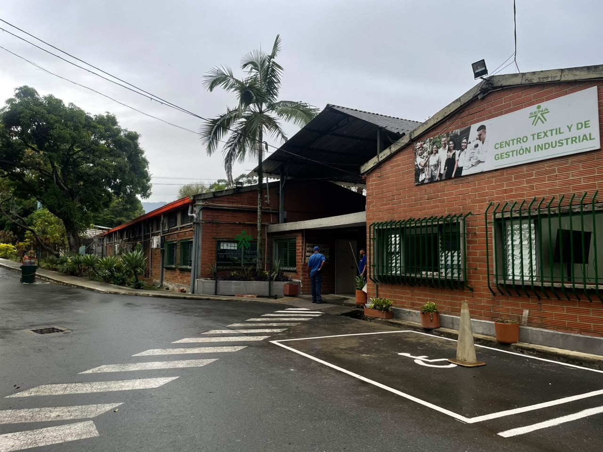

Seguridad y Salud en el Trabajo - Análisis y Desarrollo de Software (CTGI)
Promoviendo la Cultura de Prevención y Autocuidado
Bienvenido a Riesgo Cero, una plataforma diseñada para los aprendices, instructores y personal administrativo del Centro Textil y de Gestión Industrial (CTGI) — programa de Análisis y Desarrollo de Software. Aquí podrás conocer, identificar y prevenir los principales riesgos laborales presentes en nuestro entorno formativo.
